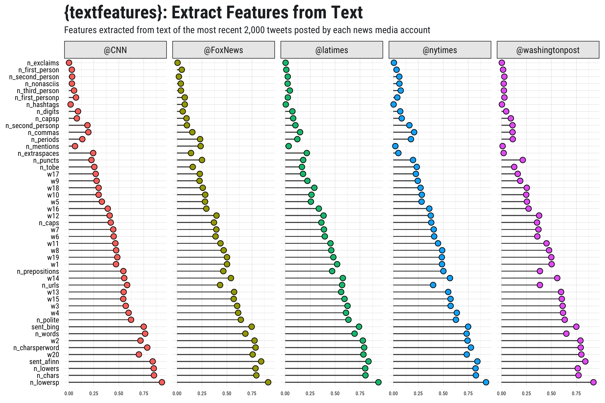

Easily extract useful features from character objects.
Usage
textfeatures()
Input a character vector.
## vector of some text
x <- c(
"this is A!\t sEntence https://github.com about #rstats @github",
"and another sentence here", "THe following list:\n- one\n- two\n- three\nOkay!?!"
)
## get text features
textfeatures(x)
#> # A tibble: 3 x 30
#> id n_urls n_hashtags n_mentions n_chars n_commas n_digits n_exclaims n_extraspaces n_lowers
#> <chr> <dbl> <dbl> <dbl> <dbl> <dbl> <dbl> <dbl> <dbl> <dbl>
#> 1 1 1.15 1.15 1.15 -0.792 0 0 0.173 0.445 -1.09
#> 2 2 -0.577 -0.577 -0.577 -0.332 0 0 -1.08 -1.15 0.224
#> 3 3 -0.577 -0.577 -0.577 1.12 0 0 0.902 0.701 0.869
#> # ... with 20 more variables: n_lowersp <dbl>, n_periods <dbl>, n_words <dbl>, n_caps <dbl>,
#> # n_nonasciis <dbl>, n_puncts <dbl>, n_capsp <dbl>, n_charsperword <dbl>, sent_afinn <dbl>,
#> # sent_bing <dbl>, n_polite <dbl>, n_first_person <dbl>, n_first_personp <dbl>,
#> # n_second_person <dbl>, n_second_personp <dbl>, n_third_person <dbl>, n_tobe <dbl>,
#> # n_prepositions <dbl>, w1 <dbl>, w2 <dbl>Or input a data frame with a column named text.
## data frame with rstats tweets
rt <- rtweet::search_tweets("rstats", n = 2000, verbose = FALSE)
## get text features
tf <- textfeatures(rt, threads = 20)
## preview data
tf
#> # A tibble: 1,987 x 128
#> user_id n_urls n_hashtags n_mentions n_chars n_commas n_digits n_exclaims n_extraspaces n_lowers
#> <chr> <dbl> <dbl> <dbl> <dbl> <dbl> <dbl> <dbl> <dbl> <dbl>
#> 1 4526791 -0.556 0.0586 0.570 1.56 -0.557 -0.500 -0.347 0.191 1.62
#> 2 638271… 0.772 -1.09 1.20 0.703 1.95 -0.500 -0.347 0.191 0.575
#> 3 184097… -0.556 -0.668 -0.507 1.84 1.03 2.53 -0.347 -0.691 1.86
#> 4 184097… 0.772 -0.366 1.20 1.39 -0.557 1.21 -0.347 0.387 1.40
#> 5 813992… 0.772 -1.09 0.570 0.934 -0.557 0.580 -0.347 -0.325 0.908
#> 6 171731… -2.83 -0.366 -0.507 1.16 1.03 -0.500 2.40 -1.21 1.21
#> 7 475670… 0.772 1.32 -0.507 0.189 -0.557 -0.500 -0.347 1.07 0.177
#> 8 152290… -0.556 -0.668 -0.507 1.84 1.03 2.53 -0.347 -0.691 1.86
#> 9 196750… -0.556 -0.668 -0.507 0.789 1.95 -0.500 -0.347 -1.21 0.791
#> 10 314339… 0.772 -1.09 0.570 0.934 -0.557 0.580 -0.347 -0.325 0.908
#> # ... with 1,977 more rows, and 118 more variables: n_lowersp <dbl>, n_periods <dbl>,
#> # n_words <dbl>, n_caps <dbl>, n_nonasciis <dbl>, n_puncts <dbl>, n_capsp <dbl>,
#> # n_charsperword <dbl>, sent_afinn <dbl>, sent_bing <dbl>, n_polite <dbl>, n_first_person <dbl>,
#> # n_first_personp <dbl>, n_second_person <dbl>, n_second_personp <dbl>, n_third_person <dbl>,
#> # n_tobe <dbl>, n_prepositions <dbl>, w1 <dbl>, w2 <dbl>, w3 <dbl>, w4 <dbl>, w5 <dbl>, w6 <dbl>,
#> # w7 <dbl>, w8 <dbl>, w9 <dbl>, w10 <dbl>, w11 <dbl>, w12 <dbl>, w13 <dbl>, w14 <dbl>, w15 <dbl>,
#> # w16 <dbl>, w17 <dbl>, w18 <dbl>, w19 <dbl>, w20 <dbl>, w21 <dbl>, w22 <dbl>, w23 <dbl>,
#> # w24 <dbl>, w25 <dbl>, w26 <dbl>, w27 <dbl>, w28 <dbl>, w29 <dbl>, w30 <dbl>, w31 <dbl>,
#> # w32 <dbl>, w33 <dbl>, w34 <dbl>, w35 <dbl>, w36 <dbl>, w37 <dbl>, w38 <dbl>, w39 <dbl>,
#> # w40 <dbl>, w41 <dbl>, w42 <dbl>, w43 <dbl>, w44 <dbl>, w45 <dbl>, w46 <dbl>, w47 <dbl>,
#> # w48 <dbl>, w49 <dbl>, w50 <dbl>, w51 <dbl>, w52 <dbl>, w53 <dbl>, w54 <dbl>, w55 <dbl>,
#> # w56 <dbl>, w57 <dbl>, w58 <dbl>, w59 <dbl>, w60 <dbl>, w61 <dbl>, w62 <dbl>, w63 <dbl>,
#> # w64 <dbl>, w65 <dbl>, w66 <dbl>, w67 <dbl>, w68 <dbl>, w69 <dbl>, w70 <dbl>, w71 <dbl>,
#> # w72 <dbl>, w73 <dbl>, w74 <dbl>, w75 <dbl>, w76 <dbl>, w77 <dbl>, w78 <dbl>, w79 <dbl>,
#> # w80 <dbl>, w81 <dbl>, w82 <dbl>, …Compare across multiple authors.
## data frame tweets from multiple news media accounts
news <- rtweet::get_timelines(
c("cnn", "nytimes", "foxnews", "latimes", "washingtonpost"),
n = 2000)
## get text features (including ests for 20 word dims) for all observations
news_features <- textfeatures(news, word_dims = 20, threads = 3)
Fast version
If you’re looking for something faster try setting sentiment = FALSE and word2vec = 0.
## get non-substantive text features
textfeatures(rt, sentiment = FALSE, word_dims = 0)
#> # A tibble: 1,987 x 26
#> user_id n_urls n_hashtags n_mentions n_chars n_commas n_digits n_exclaims n_extraspaces n_lowers
#> <chr> <dbl> <dbl> <dbl> <dbl> <dbl> <dbl> <dbl> <dbl> <dbl>
#> 1 4526791 -0.556 0.0586 0.570 1.56 -0.557 -0.500 -0.347 0.191 1.62
#> 2 638271… 0.772 -1.09 1.20 0.703 1.95 -0.500 -0.347 0.191 0.575
#> 3 184097… -0.556 -0.668 -0.507 1.84 1.03 2.53 -0.347 -0.691 1.86
#> 4 184097… 0.772 -0.366 1.20 1.39 -0.557 1.21 -0.347 0.387 1.40
#> 5 813992… 0.772 -1.09 0.570 0.934 -0.557 0.580 -0.347 -0.325 0.908
#> 6 171731… -2.83 -0.366 -0.507 1.16 1.03 -0.500 2.40 -1.21 1.21
#> 7 475670… 0.772 1.32 -0.507 0.189 -0.557 -0.500 -0.347 1.07 0.177
#> 8 152290… -0.556 -0.668 -0.507 1.84 1.03 2.53 -0.347 -0.691 1.86
#> 9 196750… -0.556 -0.668 -0.507 0.789 1.95 -0.500 -0.347 -1.21 0.791
#> 10 314339… 0.772 -1.09 0.570 0.934 -0.557 0.580 -0.347 -0.325 0.908
#> # ... with 1,977 more rows, and 16 more variables: n_lowersp <dbl>, n_periods <dbl>, n_words <dbl>,
#> # n_caps <dbl>, n_nonasciis <dbl>, n_puncts <dbl>, n_capsp <dbl>, n_charsperword <dbl>,
#> # n_polite <dbl>, n_first_person <dbl>, n_first_personp <dbl>, n_second_person <dbl>,
#> # n_second_personp <dbl>, n_third_person <dbl>, n_tobe <dbl>, n_prepositions <dbl>Example: NASA meta data
Extract text features from NASA meta data:
## read NASA meta data
nasa <- jsonlite::fromJSON("https://data.nasa.gov/data.json")
## identify non-public or restricted data sets
nonpub <- grepl("Not publicly available|must register",
nasa$data$rights, ignore.case = TRUE) |
nasa$dataset$accessLevel %in% c("restricted public", "non-public")
## create data frame with ID, description (name it "text"), and nonpub
nd <- data.frame(text = nasa$dataset$description, nonpub = nonpub,
stringsAsFactors = FALSE)
## drop duplicates (truncate text to ensure more distinct obs)
nd <- nd[!duplicated(tolower(substr(nd$text, 1, 100))), ]
## filter via sampling to create equal number of pub/nonpub
nd <- nd[c(sample(which(!nd$nonpub), sum(nd$nonpub)), which(nd$nonpub)), ]
## get text features
nasa_tf <- textfeatures(nd, word_dims = 20, threads = 10)
## drop columns with little to no variance
nasa_tf <- min_var(nasa_tf)
## view summary
skimrskim(nasa_tf)| variable | min | 25% | mid | 75% | max | hist |
|---|---|---|---|---|---|---|
| n_caps | -3.08 | -0.61 | 0.23 | 0.63 | 2.09 | ▁▁▂▂▃▇▃▁ |
| n_capsp | -0.96 | -0.77 | -0.52 | 1.04 | 2.01 | ▇▃▁▁▁▁▂▂ |
| n_chars | -2.84 | -0.78 | -0.12 | 0.96 | 1.79 | ▁▁▃▇▃▃▇▂ |
| n_charsperword | -6.32 | -0.3 | 0.25 | 0.54 | 2.11 | ▁▁▁▁▁▃▇▁ |
| n_digits | -0.96 | -0.96 | -0.14 | 0.77 | 2.57 | ▇▂▂▂▂▂▁▁ |
| n_exclaims | -0.055 | -0.055 | -0.055 | -0.055 | 18.28 | ▇▁▁▁▁▁▁▁ |
| n_extraspaces | -0.55 | -0.55 | -0.55 | 0.44 | 4.02 | ▇▁▁▁▁▁▁▁ |
| n_first_person | -0.78 | -0.78 | -0.78 | 1.11 | 2.21 | ▇▁▁▁▁▅▁▁ |
| n_hashtags | -0.073 | -0.073 | -0.073 | -0.073 | 16.34 | ▇▁▁▁▁▁▁▁ |
| n_mentions | -0.075 | -0.075 | -0.075 | -0.075 | 15.45 | ▇▁▁▁▁▁▁▁ |
| n_nonasciis | -0.12 | -0.12 | -0.12 | -0.12 | 11.84 | ▇▁▁▁▁▁▁▁ |
| n_periods | -1.09 | -1.09 | -0.033 | 0.91 | 2.18 | ▇▁▂▂▃▂▂▁ |
| n_polite | -6.73 | -0.11 | 0.29 | 0.29 | 2.72 | ▁▁▁▁▁▇▂▁ |
| n_prepositions | -1.05 | -1.05 | -0.023 | 1 | 1.59 | ▇▁▁▁▁▂▃▂ |
| n_puncts | -1.15 | -1.15 | -0.052 | 0.82 | 3.01 | ▇▃▅▃▅▁▁▁ |
| n_second_person | -0.055 | -0.055 | -0.055 | -0.055 | 18.28 | ▇▁▁▁▁▁▁▁ |
| n_second_personp | -0.41 | -0.41 | -0.41 | -0.41 | 3.88 | ▇▁▁▁▁▁▁▁ |
| n_tobe | -0.88 | -0.88 | -0.88 | 1.05 | 2.19 | ▇▁▁▂▁▃▁▁ |
| n_urls | -0.2 | -0.2 | -0.2 | -0.2 | 5.23 | ▇▁▁▁▁▁▁▁ |
| sent_afinn | -3.54 | -0.52 | -0.52 | 0.37 | 2.88 | ▁▁▁▇▂▂▁▁ |
| sent_bing | -4.14 | -0.46 | -0.46 | 0.14 | 3.39 | ▁▁▁▇▂▂▁▁ |
| w1 | -4.24 | -0.3 | 0.28 | 0.46 | 3.35 | ▁▁▁▂▇▂▁▁ |
| w10 | -0.79 | -0.73 | -0.56 | 0.67 | 6.45 | ▇▂▂▁▁▁▁▁ |
| w11 | -6.16 | -0.5 | 0.35 | 0.76 | 2.26 | ▁▁▁▁▂▃▇▁ |
| w12 | -9.22 | -0.15 | 0.4 | 0.46 | 1.59 | ▁▁▁▁▁▁▃▇ |
| w15 | -4.06 | -0.38 | -0.19 | 0.51 | 4.18 | ▁▁▁▇▅▁▁▁ |
| w17 | -0.79 | -0.62 | -0.46 | 0.48 | 9.95 | ▇▂▁▁▁▁▁▁ |
| w18 | -1 | -0.7 | -0.57 | 0.67 | 5.48 | ▇▂▂▁▁▁▁▁ |
| w2 | -4.94 | -0.22 | 0.47 | 0.64 | 0.75 | ▁▁▁▁▁▁▂▇ |
| w20 | -7.07 | -0.46 | 0.46 | 0.66 | 0.72 | ▁▁▁▁▁▁▂▇ |
| w3 | -0.8 | -0.64 | -0.52 | 0.37 | 6.44 | ▇▂▁▁▁▁▁▁ |
| w4 | -8.38 | -0.19 | -0.055 | 0.1 | 3.07 | ▁▁▁▁▁▇▂▁ |
| w5 | -0.89 | -0.66 | -0.4 | 0.32 | 4.58 | ▇▂▁▁▁▁▁▁ |
| w7 | -4.43 | -0.28 | -0.048 | 0.12 | 3.82 | ▁▁▁▂▇▂▁▁ |
| w9 | -2.24 | -0.46 | -0.39 | 0.28 | 4.87 | ▁▃▇▂▁▁▁▁ |
## add nonpub variable
nasa_tf$nonpub <- nd$nonpub
## run model predicting whether data is restricted
m1 <- glm(nonpub ~ ., data = nasa_tf[-1], family = binomial)
#> Warning: glm.fit: fitted probabilities numerically 0 or 1 occurred
## view model summary
summary(m1)
#>
#> Call:
#> glm(formula = nonpub ~ ., family = binomial, data = nasa_tf[-1])
#>
#> Deviance Residuals:
#> Min 1Q Median 3Q Max
#> -2.2405 -0.0004 0.0000 0.0089 3.3056
#>
#> Coefficients:
#> Estimate Std. Error z value Pr(>|z|)
#> (Intercept) -5.6786 82.2834 -0.069 0.9450
#> n_urls -3.3498 1.6020 -2.091 0.0365 *
#> n_hashtags 1.8633 422.6587 0.004 0.9965
#> n_mentions 1.1462 692.7555 0.002 0.9987
#> n_chars 4.7073 3.4813 1.352 0.1763
#> n_digits -3.1365 1.3760 -2.279 0.0226 *
#> n_exclaims 2.6374 606.9570 0.004 0.9965
#> n_extraspaces 1.8326 1.2420 1.476 0.1401
#> n_periods 3.0238 1.4551 2.078 0.0377 *
#> n_caps -4.4598 2.1331 -2.091 0.0366 *
#> n_nonasciis -3.2378 493.5304 -0.007 0.9948
#> n_puncts 3.3331 1.4116 2.361 0.0182 *
#> n_capsp 7.0622 3.3684 2.097 0.0360 *
#> n_charsperword -2.0448 1.0462 -1.955 0.0506 .
#> sent_afinn 3.5112 2.4244 1.448 0.1475
#> sent_bing -2.5471 2.1036 -1.211 0.2260
#> n_polite -1.2288 0.9306 -1.320 0.1867
#> n_first_person -2.3223 1.3753 -1.689 0.0913 .
#> n_second_person 1.9334 693.6909 0.003 0.9978
#> n_second_personp -0.3321 1.0356 -0.321 0.7485
#> n_tobe 1.3830 1.1262 1.228 0.2194
#> n_prepositions -3.7355 1.6517 -2.262 0.0237 *
#> w1 -1.2579 1.4017 -0.897 0.3695
#> w2 -0.4069 4.7461 -0.086 0.9317
#> w3 1.2365 6.0993 0.203 0.8393
#> w4 8.8291 3.7077 2.381 0.0173 *
#> w5 1.7070 3.2909 0.519 0.6040
#> w7 -5.7267 3.1610 -1.812 0.0700 .
#> w9 -4.3710 3.3932 -1.288 0.1977
#> w10 -5.7971 5.9353 -0.977 0.3287
#> w11 3.7126 2.7129 1.369 0.1712
#> w12 1.1023 2.0974 0.526 0.5992
#> w15 3.0792 1.6555 1.860 0.0629 .
#> w17 -16.3435 7.1330 -2.291 0.0219 *
#> w18 -9.6063 5.4169 -1.773 0.0762 .
#> w20 -21.1333 9.8220 -2.152 0.0314 *
#> ---
#> Signif. codes: 0 '***' 0.001 '**' 0.01 '*' 0.05 '.' 0.1 ' ' 1
#>
#> (Dispersion parameter for binomial family taken to be 1)
#>
#> Null deviance: 465.795 on 335 degrees of freedom
#> Residual deviance: 56.396 on 300 degrees of freedom
#> AIC: 128.4
#>
#> Number of Fisher Scoring iterations: 18
## how accurate was the model?
table(predict(m1, type = "response") > .5, nasa_tf$nonpub)
#>
#> FALSE TRUE
#> FALSE 164 3
#> TRUE 4 165